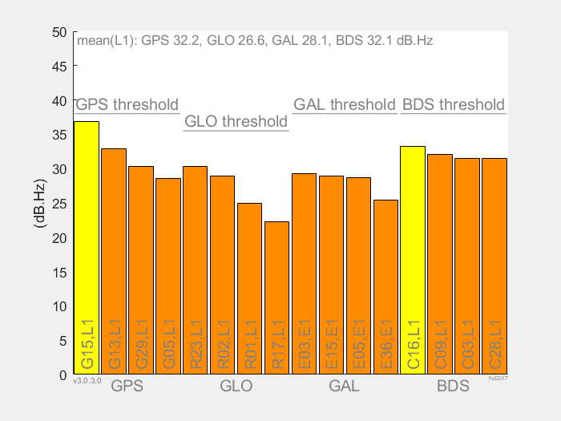
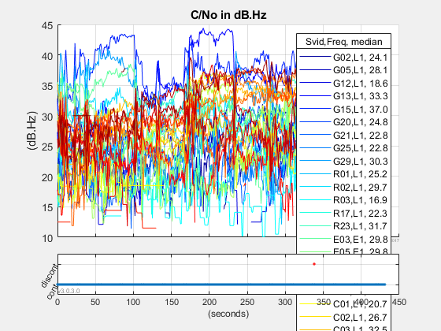

This analysis is for a stationary receiver, with open sky.
Data directory:
~\Desktop\GnssAnalysisWindowsV3.0.3.0\demofiles\
Log file: gnss_log_2016_06_30_21_26_07.txt
GnssLogger: v1.4.0.0
GNSS Analysis App: v3.0.3.0
Phone: Google Model: Nexus 5
Android version: 7.0
Note: Later Android version is available - check this website https://source.android.com/setup/start/build-numbers
API.
GnssClock Errors. None. GnssMeasurement Errors. None. WARNING, Recommended Fields Missing: CarrierFrequencyHz, AccumulatedDeltaRangeMeters, AccumulatedDeltaRangeUncertaintyMeters.
PASS
Received Signal Analysis.

GPS(L1), mean of strongest 4 mean C/No = 37.3 dBHz Pass/fail reference threshold = 38.0 dBHz Error: L1 signals -0.7 dB compared to reference FAIL BECAUSE OF WEAK SIGNALS
FAIL
Receiver Clock Analysis.

|GNSS receiver clock rate|, max, 14.36 ppb |GNSS receiver clock drift rate|, not enough continuous data |Standby clock rate|, 511.96 ppm
Pseudorange Analysis.

|error| of mean WLS position from ref = median pos (from raw pr), 0.4 meters |PR errors| 95% < 20.1 meters
PASS
Pseudorange explanation
These plots show
1) Satellites available above the horizon
Gray dot means the satellite was above the horizon, but not tracked.
2) Carrier to Noise Density ratio (C/No) of the strongest satellites
above 5 degrees elevation (bar graph)
Each bar shows the median C/No for that satellite signal.
3) C/No of all satellites above 5 degrees elevation (line graph)

The GPS reference threshold is set to 38 dBHz. Well built phones, in open sky, have GPS satellites stronger than this threshold. GLONASS threshold is 2.5dB lower, since GLO signal is 2.5dB weaker, (see GPS and GLONASS ICDs). For your log file the C/No results are: GPS(L1), mean of strongest 4 mean C/No = 37.3 dBHz Pass/fail reference threshold = 38.0 dBHz Error: L1 signals -0.7 dB compared to reference FAIL BECAUSE OF WEAK SIGNALS
This plot shows the clock frequency offset while the receiver is continuously tracking satellites. Clock drift rate is computed for continuous intervals > 20 samples. Frequency offset within +- 500 ppb, and drift rate within +- 2 ppb/s is consistent with good TCXO behavior.

For your log file the continuous clock behavior is: |GNSS receiver clock rate|, max, 14.36 ppb |GNSS receiver clock drift rate|, not enough continuous data
The next plot shows the (standby) clock drift across discontinuities. This includes the clock behavior while duty-cycling.

For your log file the standby clock behavior is: |Standby clock rate|, 511.96 ppm
This plot shows the WLS (Weighted Least Squares) position solution, using raw GNSS pseudoranges for satellites above 5 degrees elevation,
In open sky the expected WLS horizontal scatter is about 10 to 20 meters. Smaller when clock is continuous and pr is smoothed. Larger when near buildings. The next plots shows the pseudorange errors, that is: the measured pseudorange minus the expected pseudorange, computed using the reference position

Errors are computed from pseudoranges, smoothed where clock is continuous. Only satellites above 5 degrees elevation are shown. Under open sky, errors for high satellites should be < 50 meters (95%). For your log file the error analysis results are: |PR errors| 95% < 20.1 meters PASS The next plot shows the errors for all GNSS satellites. The low satellites often have larger errors from multipath and unmodeled atmospheric delays.